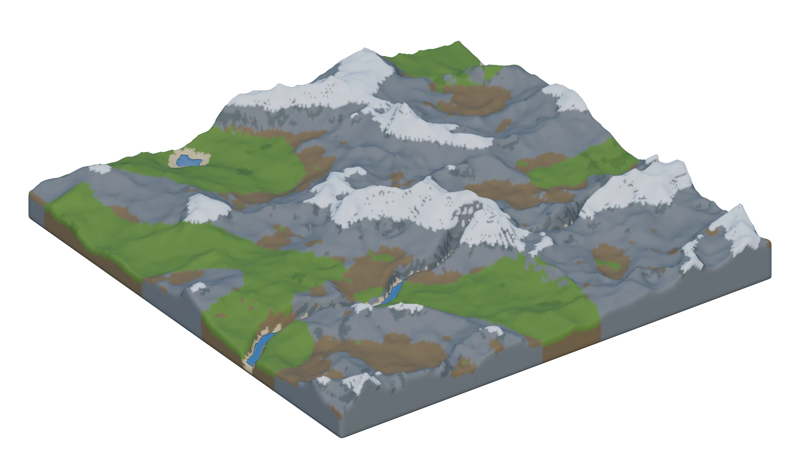
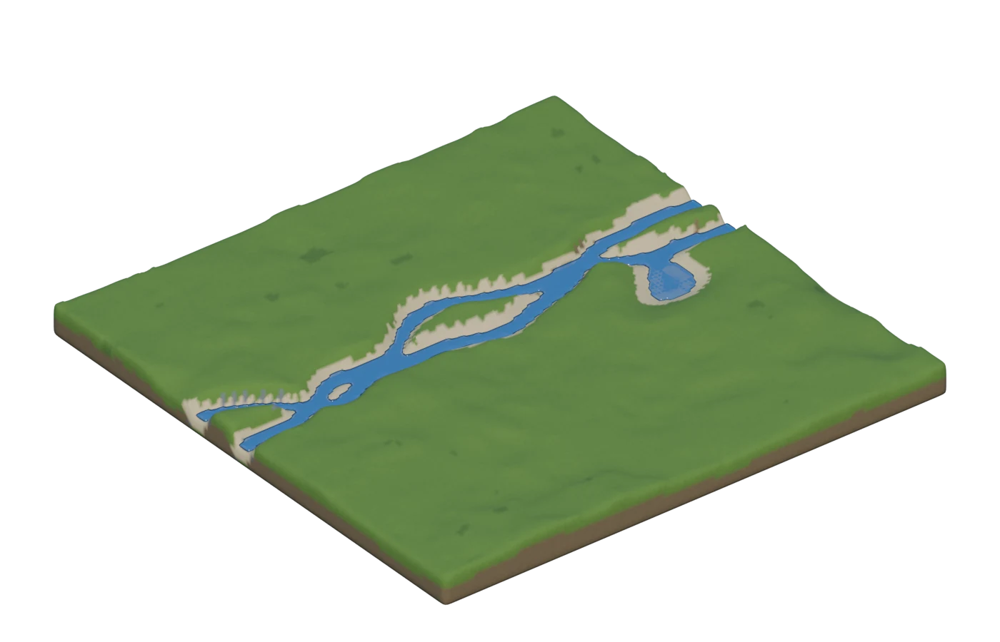
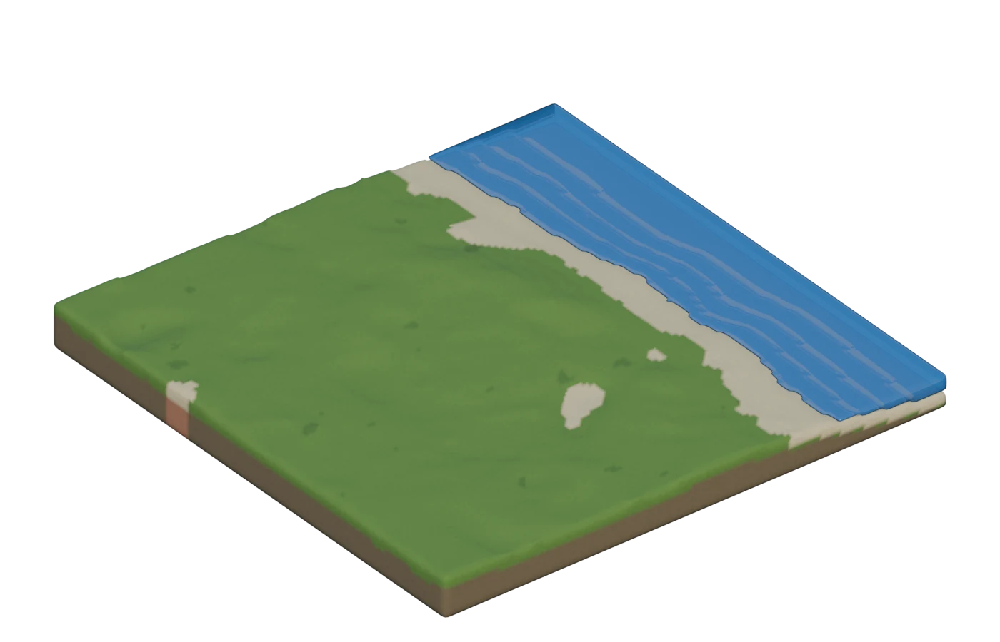
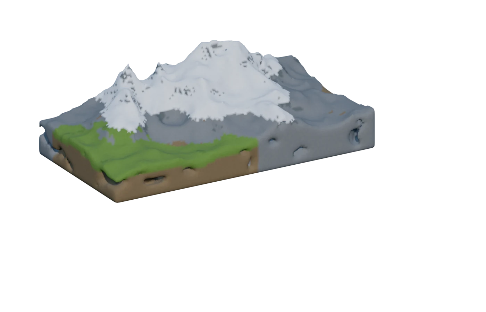
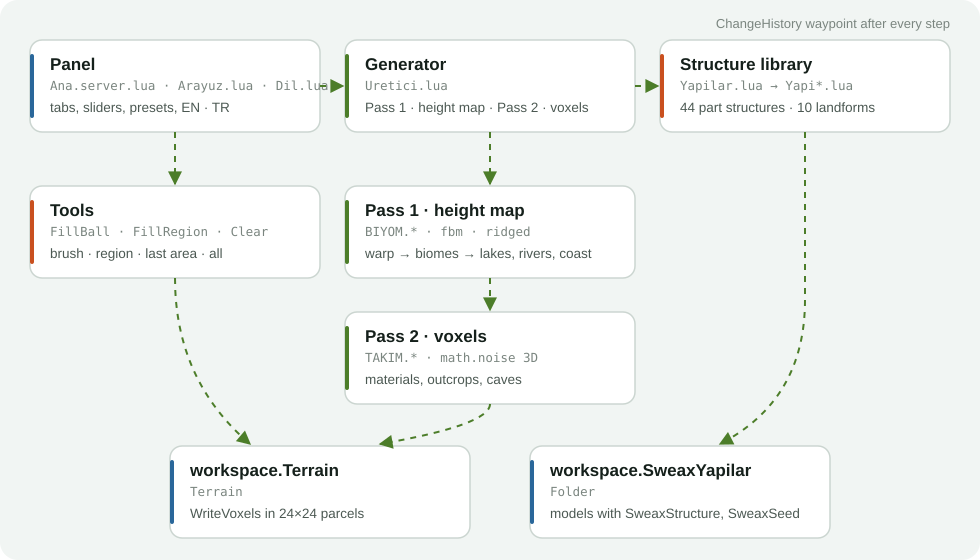

Sweax Terrain
A Roblox Studio plugin that generates whole worlds, erases terrain with a brush or a box, and places 54 ready-made structures.
SweaxTerrain.rbxmx · Roblox Studio on Windows and macOS · MIT licence

- 9 biomes, blended by weight
- 8 ready-made worlds
- 54 structures and landforms
- Ctrl+Z undoes every step
Try it here
This is the plugin's panel with its own generator, ported to JavaScript. The same seed and settings make the same world as in Studio.
Your browser has WebGL 2 turned off, so the 3D view cannot start.
Checked against Studio: in 22 worlds (238,848 columns) every surface height, surface material and water level matches. Width and depth go up to 2048 studs in Studio; the browser stops at 1024.
Eight worlds to start from
Each one sets biomes, water and detail for you. Every press of Generate world rolls a new seed, so no two runs are the same.
Nine biomes, blended by weight
Every biome is its own height function. Turn on several and their regions flow into each other; each weight decides how much land that biome gets.
Lakes, rivers, a coast and caves



Erase like you draw
The eraser works on any terrain in the place, not only on what Sweax Terrain made.
Erase the last generated area, or all terrain in the place (that one asks twice). Ctrl+Z brings any of it back.
54 structures, placed with a click
Made from plain parts, so there is nothing to load. A ghost follows your mouse and sits on the ground; every placement gets its own seed, and moss, ruin, scale and rotation are yours to set.
How it works

- The area is split into 4-stud columns, the size of a Roblox terrain voxel.
- Pass one: each column's coordinates are bent by domain warp, every enabled biome gives a height, and the weights (cubed, so regions separate) blend them. Lakes, rivers and the coast then dig into that height map.
- Beaches go only where land meets real water, within the beach width.
- Pass two: materials are chosen per voxel from slope, depth, snow line and patches; rock outcrops and caves bend the occupancy; then 24 × 24 column parcels go to WriteVoxels one by one, with a progress bar and Cancel.
- Every generate, erase and placement sets a ChangeHistory waypoint, so Ctrl+Z works the way it does for everything else in Studio.
Install
- Download
SweaxTerrain.rbxmx. - Put it in your Studio plugins folder:
In Studio you can also open it from the Plugins tab: Plugins Folder.Windows
%LOCALAPPDATA%\Roblox\PluginsmacOS~/Documents/Roblox/Plugins - Restart Roblox Studio.
- Open the Plugins tab and click Sweax Terrain. The panel follows Studio's language and theme; the EN · TR button switches language.
From source: python tools/build.py --install
Questions
Will it touch terrain I already have?
Generating clears and rewrites only the area you set (plus room above it). The eraser removes what you point at. Everything else stays, and Ctrl+Z undoes any step.
Does it need HTTP or any assets?
No. It makes no web requests and the structures are plain parts, so there is nothing to upload or approve.
How big can a world be?
Up to 2048 × 2048 studs per run. A 512 × 512 world takes well under a second; bigger ones show progress and can be cancelled.
Where do placed structures go?
Into a folder called SweaxYapilar in Workspace. Each model carries SweaxStructure and SweaxSeed attributes, so you can find or rebuild one later.
Can I share it with a friend?
Yes. Send the .rbxmx file or this page. It is MIT licensed.